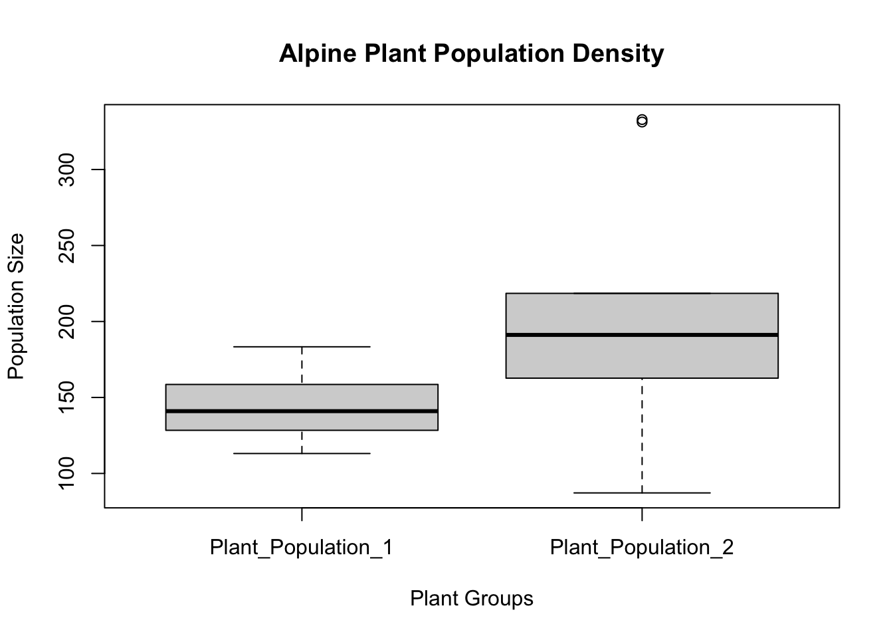

Homework 6 – Creating Fake Data Sets To Explore Hypotheses
Grace (Rei) Jia
2025-02-19
My dataset was made at random for this homework assignment, very loosely based on biodiversity of alpine plant populations in the northeast.
Making data and a quick summary of each plant population:
plantpopulation1 <- rnorm(n=10, mean = 150, sd = 20)
plantpopulation2 <- rnorm(n=10, mean = 200, sd = 50)
summary(plantpopulation1)## Min. 1st Qu. Median Mean 3rd Qu. Max.
## 121.4 133.7 143.6 144.5 153.0 178.9summary(plantpopulation2)## Min. 1st Qu. Median Mean 3rd Qu. Max.
## 170.7 205.2 226.2 230.8 237.9 350.7Putting it into a data frame:
Plant_Populations <- c(plantpopulation1, plantpopulation2)
Group_Name <- c(rep("Plant_Population_1", length(plantpopulation1)),rep("Plant_Population_2",length(plantpopulation2)))
plant_df <- data.frame(Plant_Populations, Group_Name)
print(plant_df)## Plant_Populations Group_Name
## 1 154.1980 Plant_Population_1
## 2 178.8803 Plant_Population_1
## 3 147.2580 Plant_Population_1
## 4 149.2308 Plant_Population_1
## 5 128.4288 Plant_Population_1
## 6 154.5437 Plant_Population_1
## 7 131.7143 Plant_Population_1
## 8 139.5005 Plant_Population_1
## 9 140.0153 Plant_Population_1
## 10 121.4125 Plant_Population_1
## 11 226.4397 Plant_Population_2
## 12 202.4884 Plant_Population_2
## 13 188.1374 Plant_Population_2
## 14 240.1973 Plant_Population_2
## 15 170.6613 Plant_Population_2
## 16 259.6993 Plant_Population_2
## 17 213.2094 Plant_Population_2
## 18 350.6677 Plant_Population_2
## 19 230.9996 Plant_Population_2
## 20 225.9088 Plant_Population_2Plotting the data
boxplot(Plant_Populations~Group_Name,data=plant_df, main="Alpine Plant Population Density",
xlab="Plant Groups", ylab="Population Size")
hist(plant_df$Plant_Populations,
main = paste("Histogram of Plant Populations 1 and 2"),
xlab = "Population Density", ylab = "Frequency")
Using the same parameters as in the previous step, I am now usign a for loop to simulate 20 different iterations of this combined plant populations. My original sample size was 10.
n_iterations <- 1:20
for (i in n_iterations){
plantpopulation1 <- rnorm(n=10, mean = 150, sd = 20)
plantpopulation2 <- rnorm(n=10, mean = 200, sd = 50)
Plant_Populations <- c(plantpopulation1, plantpopulation2)
Group_Name <- c(rep("Plant_Population_1", length(plantpopulation1)),rep("Plant_Population_2",length(plantpopulation2)))
plant_df <- data.frame(Plant_Populations, Group_Name)
test_result <- t.test(Plant_Populations~Group_Name, data = plant_df)
n_iterations[i] <- test_result$p.value
cat("Iteration=",i,"P-value=")
print(test_result$p.value)
}## Iteration= 1 P-value=[1] 0.04600056
## Iteration= 2 P-value=[1] 0.1472242
## Iteration= 3 P-value=[1] 0.001309683
## Iteration= 4 P-value=[1] 0.04246584
## Iteration= 5 P-value=[1] 0.04168452
## Iteration= 6 P-value=[1] 0.01628475
## Iteration= 7 P-value=[1] 0.07262457
## Iteration= 8 P-value=[1] 0.05873181
## Iteration= 9 P-value=[1] 0.004345211
## Iteration= 10 P-value=[1] 0.008801061
## Iteration= 11 P-value=[1] 0.002789155
## Iteration= 12 P-value=[1] 0.005833392
## Iteration= 13 P-value=[1] 0.01011285
## Iteration= 14 P-value=[1] 0.01294367
## Iteration= 15 P-value=[1] 0.0002051904
## Iteration= 16 P-value=[1] 9.844521e-05
## Iteration= 17 P-value=[1] 0.01003446
## Iteration= 18 P-value=[1] 0.02123215
## Iteration= 19 P-value=[1] 0.0004416941
## Iteration= 20 P-value=[1] 0.05077696From the 20 iterations above, I determined that several have a p-value of < 0.05 (which changes every time I run the for loop).
which(n_iterations < 0.05)## [1] 1 3 4 5 6 9 10 11 12 13 14 15 16 17 18 19Here I am running the same for loop but I changed the sample size to 5.
n_iterations <- 1:20
for (i in n_iterations){
plantpopulation1 <- rnorm(n=5, mean = 150, sd = 20)
plantpopulation2 <- rnorm(n=5, mean = 200, sd = 50)
Plant_Populations <- c(plantpopulation1, plantpopulation2)
Group_Name <- c(rep("Plant_Population_1", length(plantpopulation1)),rep("Plant_Population_2",length(plantpopulation2)))
plant_df <- data.frame(Plant_Populations, Group_Name)
test_result <- t.test(Plant_Populations~Group_Name, data = plant_df)
n_iterations[i] <- test_result$p.value
cat("Iteration=",i,"P-value=")
print(test_result$p.value)
}## Iteration= 1 P-value=[1] 0.0542057
## Iteration= 2 P-value=[1] 0.08243595
## Iteration= 3 P-value=[1] 0.05877582
## Iteration= 4 P-value=[1] 0.02035378
## Iteration= 5 P-value=[1] 0.002947689
## Iteration= 6 P-value=[1] 0.07698683
## Iteration= 7 P-value=[1] 0.03210194
## Iteration= 8 P-value=[1] 0.0008057668
## Iteration= 9 P-value=[1] 0.5029969
## Iteration= 10 P-value=[1] 0.262039
## Iteration= 11 P-value=[1] 0.01248862
## Iteration= 12 P-value=[1] 0.004675435
## Iteration= 13 P-value=[1] 0.1716328
## Iteration= 14 P-value=[1] 0.7308497
## Iteration= 15 P-value=[1] 0.1792262
## Iteration= 16 P-value=[1] 0.06611981
## Iteration= 17 P-value=[1] 9.36124e-05
## Iteration= 18 P-value=[1] 0.07429157
## Iteration= 19 P-value=[1] 0.3465506
## Iteration= 20 P-value=[1] 0.02038283Again, from the 20 iterations above with a sample size of 5, I determined that several have a p-value of < 0.05 (which changes every time I run the for loop).
which(n_iterations < 0.05)## [1] 4 5 7 8 11 12 17 20Continuing to use this for loop, I have determined that the smallest sample size that is still statistically significant is 2, which is rather shocking. Evidence below!
n_iterations <- 1:20
for (i in n_iterations){
plantpopulation1 <- rnorm(n=2, mean = 150, sd = 20)
plantpopulation2 <- rnorm(n=2, mean = 200, sd = 50)
Plant_Populations <- c(plantpopulation1, plantpopulation2)
Group_Name <- c(rep("Plant_Population_1", length(plantpopulation1)),rep("Plant_Population_2",length(plantpopulation2)))
plant_df <- data.frame(Plant_Populations, Group_Name)
test_result <- t.test(Plant_Populations~Group_Name, data = plant_df)
n_iterations[i] <- test_result$p.value
cat("Iteration=",i,"P-value=")
print(test_result$p.value)
}## Iteration= 1 P-value=[1] 0.2627553
## Iteration= 2 P-value=[1] 0.5836061
## Iteration= 3 P-value=[1] 0.0103954
## Iteration= 4 P-value=[1] 0.5368857
## Iteration= 5 P-value=[1] 0.2909535
## Iteration= 6 P-value=[1] 0.9852319
## Iteration= 7 P-value=[1] 0.278812
## Iteration= 8 P-value=[1] 0.008775577
## Iteration= 9 P-value=[1] 0.9299607
## Iteration= 10 P-value=[1] 0.4193248
## Iteration= 11 P-value=[1] 0.414639
## Iteration= 12 P-value=[1] 0.2666164
## Iteration= 13 P-value=[1] 0.9854857
## Iteration= 14 P-value=[1] 0.40609
## Iteration= 15 P-value=[1] 0.5892873
## Iteration= 16 P-value=[1] 0.02436792
## Iteration= 17 P-value=[1] 0.08508352
## Iteration= 18 P-value=[1] 0.4867057
## Iteration= 19 P-value=[1] 0.1107876
## Iteration= 20 P-value=[1] 0.2056956which(n_iterations < 0.05)## [1] 3 8 16